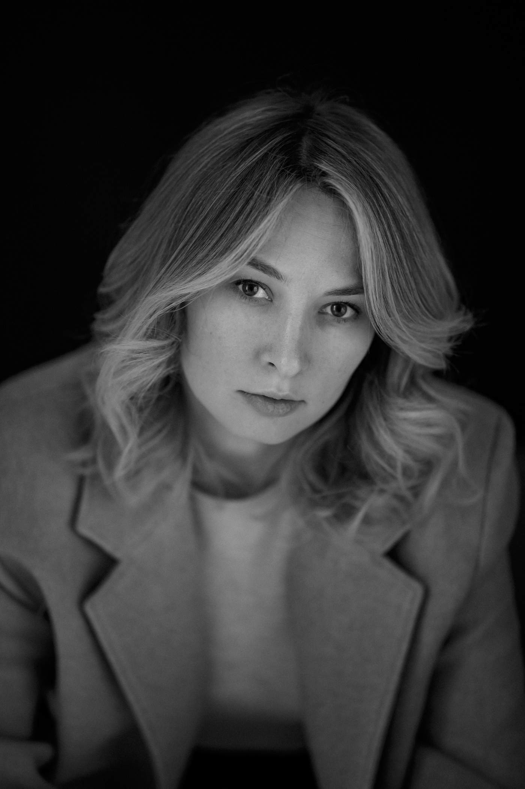
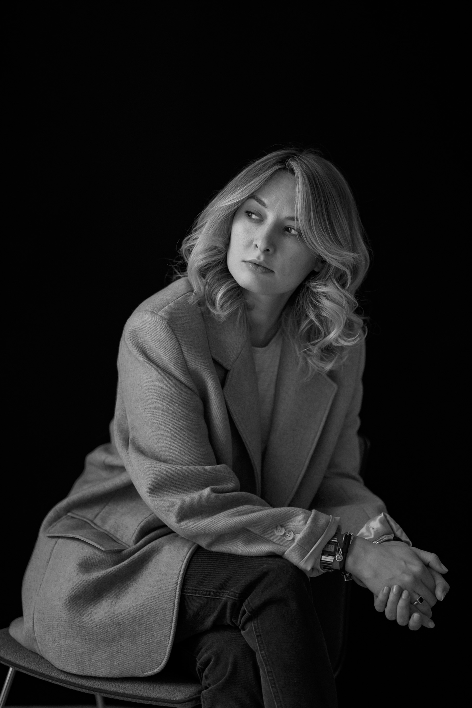

Помогаю найти опору и путь в переменах: в профессии, в отношениях с собой, в сложных ситуациях на работе. Через психодинамический подход и бережный разговор, а не готовые советы.

Куда бы вы ни шли, с этим не обязательно разбираться в одиночку.
Я не даю готовых советов. Мой подход психодинамический: мы идём вглубь, к тому, что на самом деле управляет вашими решениями и состоянием.
Рядом со мной люди находят свою опору. Начинают видеть связи, которых не замечали, и решаются действовать иначе. Замечают привычки, которые когда-то помогали, а теперь тормозят. И постепенно возвращают себе то, ради чего всё и затевается, удовольствие от жизни.
Психодинамическое образование и годы работы руководителем: поэтому со мной можно говорить и о внутреннем, и о реальном, о карьере, отношениях, выборе. Не нужно объяснять, как устроена работа изнутри, я это знаю.

Есть темы, в которых я работаю особенно глубоко. Одна из них: токсичные системы на работе. Как их распознать, как сохранить себя и как уйти с достоинством. Об этом моя книга и комикс «Ничего личного».
История и метод: как устроены токсичные рабочие системы, почему из них так трудно уйти и как выйти, сохранив себя. Основана на реальном опыте, моём и моих клиентов.
Читать →Короткие иллюстрированные сюжеты о жизни в офисе: узнаваемые ситуации и разбор, что происходит и как можно иначе. Без осуждения, с юмором и бережностью.
СкороНачать можно с бесплатного разговора, чтобы понять, подходим ли мы друг другу. Без обязательств.
Короткая встреча, чтобы вы рассказали, что вас привело, а я как могу быть полезна. Иногда этого уже достаточно, чтобы что-то прояснилось.
Записаться →Когда есть конкретный вопрос, с которым хочется разобраться здесь и сейчас.
Записаться →Для глубокой работы, когда за запросом стоит что-то большее, и важно пройти путь, а не получить быстрый ответ. Цена сессии в программе выгоднее.
Записаться →Не всё требует личной работы, иногда нужна поддержка под рукой, на каждый день. Я собрала два бережных инструмента, которые помогают не потерять себя в потоке.
Приложение для женщин, про возвращение к себе. Мягкие ежедневные практики, которые помогают услышать свой голос, когда его заглушили тревога, усталость или чужие ожидания.
СкороСпутник для тех, кто в сложной рабочей среде и пока не может уйти. Помогает распознавать, что происходит, сохранять опору и держать курс, день за днём.
СкороИногда самое трудное это разрешить себе начать. Не обязательно знать заранее, куда всё придёт. Достаточно одного разговора, чтобы понять, в какую сторону хочется идти.
Если пока не готовы к разговору, можно начать с книги или просто побыть рядом с этими историями. В своём темпе.